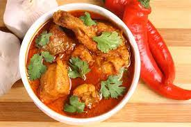

Burmese Chicken Curry Recipe

Description
Experience the rich and aromatic flavors of Burma with this traditional Burmese-style chicken curry. Tender pieces of chicken are slow-cooked in a fragrant blend of spices, including turmeric, garlic, and ginger, creating a beautifully golden curry that’s both comforting and flavorful. The dish is enhanced with the subtle sweetness of onions and tomatoes, balanced by the warmth of cumin and coriander. Served over steamed rice, this curry offers a delightful taste of Myanmar's culinary heritage, perfect for a cozy meal at home or a special gathering.
Ingredients
- 1 kg chicken pieces - mix of thighs and drumsticks with skin on
- 1 tbsp salt
- 1 tsp ground turmeric
- 2 tsp ground ginger
- 3 garlic cloves
- 1½ cups onion - finely chopped
- ½ cup oil - vegetable oil or peanut oil
- 2 tsp chilli powder
- 3 medium tomatoes - chopped or half tin of peeled tomatoes
- 2 tbsp fish sauce
- 2 tsp lemongrass powder
Instructions
- Rub the chicken pieces with salt, ground turmeric, and ground ginger and set aside.
- In a large frying pan or skillet, heat the cooking oil and fry the onion and garlic well over low heat until fragrant.
- Add the chilli powder, stir for a minute, then add the chicken, increase the heat, and stir occasionally.
- When the chicken starts to brown and begins to splutter, lower the heat, then continue to stir to prevent the chicken from sticking to the pan.
- When the chicken starts to stick to the pan, add half a cup of water, stir, cover with a lid, and let the chicken simmer for 10-15 minutes.
- Add the tomatoes, fish sauce, and ground lemongrass, stir, then cover the lid and cook for another 10-15 minutes or so.
- The chicken curry is ready when the clear oil has separated out and sits on top of the thick fragrant gravy beneath it.
- Serve with Burmese coconut rice, a relish, and salads.